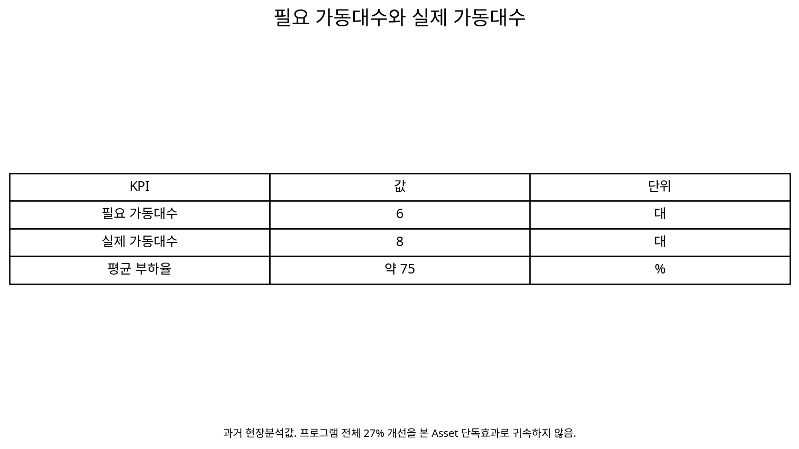

냉동기 가동대수 8대→7대 최적화를 통한
시스템 에너지원단위 개선
과거 운전데이터에서 실제 냉동부하에 비해 냉동기 가동대수가 과다하고 개별 냉동기가 낮은 부하율로 운전되는 현상을 발견한 뒤, UT 운전최적화 프로그램을 활용해 가동대수를 줄이고 호기효율·운전조건을 함께 개선한 시스템 수준의 최적화 사례.
Chiller StagingPlant LoadPart-loadkW/RTSystem Optimization1. 냉동기가 많으면 안정적이지만, 항상 효율적인 것은 아니다
여러 대의 냉동기를 병렬로 보유한 Plant에서는 부하변동과 설비고장에 대비해 여유대수를 운전하고 싶어질 수 있다. 그러나 필요 이상으로 많은 냉동기를 동시에 운전하면 각 호기의 부하율이 낮아지고, 냉수·냉각수펌프 같은 보조설비도 추가로 가동될 수 있다.
2. 이론적 배경 — Chiller Staging은 Part-load 효율과 보조동력의 결합문제다
여러 대의 냉동기를 병렬운전할 때는 Plant Load가 증가·감소함에 따라 몇 대를 Online 상태로 둘지 결정해야 한다. 이를 Chiller Staging 또는 Sequencing이라 한다. 단순히 정격 RT를 더해 대수를 결정하면 냉동기의 Part-load Efficiency와 Pump·Cooling Tower Fan 같은 보조동력을 놓칠 수 있다.
ASHRAE의 다중 냉동기 제어 이론에서는 추가 냉동기를 투입했을 때의 Chiller + Pump + Tower Fan 총전력이 현재 운전보다 낮아지는지를 비교하여 Stage-up/Stage-down 조건을 판단한다. 따라서 CASE64의 핵심은 ‘한 대를 끄는 것’보다 어느 부하구간에서 몇 대가 Plant 전체효율에 유리한가를 찾는 데 있다.
3. Stage-up과 Stage-down 사이에는 Deadband와 시간조건이 필요하다
부하가 경계값 주변에서 흔들릴 때 냉동기를 즉시 켰다 껐다 하면 Short Cycling이 발생하고 기계적 스트레스와 제어불안정이 커질 수 있다. 따라서 실제 대수제어에는 Stage-up과 Stage-down의 서로 다른 기준, 최소 Stage Runtime과 부하변화 추세를 함께 적용하는 것이 중요하다.
ASHRAE의 Supervisory Control 자료는 동일 냉동기의 투입점과 정지점을 다르게 두는 Hysteresis를 예로 들고 있으며, Guideline 36의 고성능 Sequence도 특정 조건이 일정시간 지속되는지 확인한 뒤 Stage를 변경하도록 구성한다.
부하 Threshold + Hysteresis + Minimum Stage Runtime + Load Trend + Supply Temperature Failsafe
4. 과거 운전데이터에서 ‘필요 6대, 실제 8대’가 확인되었다
2007년 P6 5℃ 냉동기 데이터를 분석한 자료에서는 필요 가동대수 6대에 비해 실제 가동대수는 8대였고, 당시 평균적인 부하율은 약 75%로 제시되어 있다.
가동대수
가동대수
부하율
이 관찰이 “왜 실제 필요한 대수보다 많은 냉동기가 운전되고 있는가?”라는 시스템 최적화의 출발점이 되었다.
5. 단순히 두 대를 끄지 않고 최적화 프로그램을 먼저 구축했다
프로젝트에서는 냉동기뿐 아니라 CDA와 보일러를 포함한 UT 운전최적화 시스템을 시범 구축하고, 계측기와 분석시스템을 설치한 뒤 실제 Test와 활용단계로 넘어갔다.
즉 가동대수 저감은 경험에 의한 일회성 조작이 아니라 실시간 효율분석과 운전상태 판단을 지원하는 데이터 기반 운영체계 안에서 수행되었다.
6. 먼저 호기별 효율과 부하율을 동시에 본다
현재 Plant RT를 계산하고 각 냉동기의 실제 RT, kW, kW/RT와 부하율을 비교한다. 낮은 부하율로 여러 대가 운전되는지, 특정 고효율 호기가 충분히 Loading되고 있는지, 저효율 호기가 불필요하게 포함되어 있는지를 확인한다.
대수
Load Factor
kW/RT
kW/RT
7. 필요대수는 단순히 총 RT ÷ 정격 RT로 정하지 않는다
정격용량만으로 대수를 계산하면 실제 Part-load Efficiency, 냉수·냉각수 조건과 Pump Power를 반영하지 못한다. 또한 한 대를 정지했을 때 남은 냉동기가 제조사 허용범위에서 안정적으로 부하를 담당할 수 있는지도 확인해야 한다.
따라서 필요대수는 현재 부하 + 호기별 효율곡선 + 보조동력 + 운전제약 + 예비력을 함께 고려해 결정한다.
8. 실제 운영에서는 8대에서 7대로 한 단계 줄였다
초기 분석상 필요대수는 6대로 제시됐지만 실제 최적화 활동의 결과는 8대 → 7대 가동이었다. 이는 분석에서 보이는 이론적 최소대수와 실제 현장에서 적용하는 운영대수가 다를 수 있음을 보여준다.
생산안정성, 부하변동, 냉수 공급조건과 예비력 등을 고려해 한 번에 6대로 줄이기보다 단계적으로 7대 운전부터 적용한 것으로 해석하는 것이 안전하다.
9. 가동대수를 줄이면 남은 냉동기의 부하율이 올라간다
같은 Plant Load를 더 적은 냉동기가 담당하면 각 호기의 Load Factor가 상승한다. 해당 Chiller의 Part-load 특성에서 이 영역이 더 효율적이라면 kW/RT가 개선될 수 있고, 정지된 냉동기에 연결된 Pump 등 Auxiliary Power도 줄어들 수 있다.
다만 모든 냉동기가 고부하에서 항상 효율적인 것은 아니므로 CASE63에서처럼 System kW/RT로 재검증해야 한다.
10. 프로젝트 자료에는 설비 효율(원단위) 27% 개선이 기록되어 있다
UT 운전최적화 프로그램의 활동결과에는 “설비 가동대수 최적화: 8대 → 7대 가동”과 함께 “설비 효율(원단위) 27% 개선”이 기록되어 있다.
8→7대와 원단위 27% 개선은 프로젝트 추진경과/완료자료의 프로그램 활용 결과로 제시된 값이다. 다만 27% 전체를 ‘한 대 정지’만의 단독효과로 해석하지 않는다. 자료에는 호기별 효율분석, 고효율설비 우선가동, 저효율설비 개선 등 여러 활동이 함께 진행되었다.
11. 전체 프로젝트 절감액과 CASE64의 효과를 구분한다
관련 보고서에는 프로젝트 전체 정량효과로 16.2억원/년, 16.5억원/년 또는 후속 자료의 19.7억원/년 등 작성시점과 집계범위에 따라 서로 다른 값이 존재한다.
따라서 이 금액을 CASE64의 가동대수 8→7대만의 절감성과로 사용하지 않는다. CASE64에서는 8→7대 운전과 프로그램 수준의 원단위 27% 개선까지만 직접 연결하고 전체 프로젝트 금액은 별도 범위로 관리한다.
12. ‘최소 가동대수’보다 ‘최적 가동대수’가 더 정확한 표현이다
냉동기를 가능한 적게 켜는 것이 목적은 아니다. 한 대를 더 줄였을 때 남은 냉동기의 부하율이 지나치게 높아지거나 냉수온도 유지가 불안정해지고, 고장 시 예비력이 부족해질 수 있다.
따라서 운영기준은 현재 부하를 안정적으로 처리하면서 Plant kW/RT가 가장 낮고 필요한 Redundancy를 만족하는 가동대수로 정의한다.
13. 대수변경 Test는 단계적으로 수행한다
Baseline에서 8대 운전의 총 RT, Chiller kW, Pump kW, 냉수온도와 호기별 부하율을 기록한 뒤 7대로 전환하고 시스템이 안정화된 후 동일 KPI를 다시 측정한다.
부하가 낮은 시간부터 Test하고 냉수 공급온도, 최대 호기부하율, Pump Flow와 ΔP, Surge/운전제약을 확인한 뒤 적용범위를 확대한다.
14. 18단계 Chiller Staging 분석 Process
① Plant Load Profile → ② Chiller Inventory → ③ 정격 RT → ④ 실제 RT → ⑤ 가동대수 → ⑥ 호기별 Load Factor → ⑦ 호기별 kW → ⑧ kW/RT → ⑨ Pump/Auxiliary Power → ⑩ System kW/RT → ⑪ 이론 필요대수 → ⑫ 예비력·제약 → ⑬ 1대 감축 Test → ⑭ 안정화 → ⑮ 냉수조건 검증 → ⑯ Before/After System Efficiency → ⑰ 부하구간별 Staging Rule → ⑱ 지속 Monitoring
15. CASE56·63과 연결하면 Staging과 Dispatch가 완성된다
CASE56은 어떤 냉동기가 효율적인지, CASE63은 가동 중인 냉동기에 부하를 어떻게 배분할지, CASE64는 현재 부하에서 몇 대를 가동할지를 다룬다.
효율
선택
Staging
Dispatch
kW/RT
16. N+1은 ‘항상 한 대를 더 돌린다’는 뜻이 아니다
신뢰성이 중요한 시설에서는 N대가 정상부하를 담당하고 1대를 예비로 확보하는 N+1 개념이 널리 사용된다. 그러나 에너지관점에서 N+1은 예비 냉동기를 항상 Loading 상태로 운전해야 한다는 뜻으로 해석할 필요는 없다.
ASHRAE는 데이터센터의 Redundancy를 단순 장비수보다 Concurrent Maintainability와 Failure Mode 관점에서 설계해야 한다고 설명한다. 즉 한 냉동기를 정비로 분리해도 중요부하를 유지할 수 있어야 하며, 예비설비·배관·Pump·전원·제어경로까지 실제로 기능하는지 확인해야 한다.
17. 데이터센터 — 에너지효율과 가용성을 동시에 최적화한다
데이터센터는 24시간 냉방부하와 높은 가용성을 요구하므로 단순 최소전력 Staging보다 Redundancy가 중요한 제약조건이다. ASHRAE는 N+1, 2N 등 다양한 Redundancy 구조를 설명하면서 Redundancy가 많다고 자동으로 신뢰성이 보장되는 것은 아니며 시스템 구성과 Failure Mode 분석이 필요하다고 강조한다.
따라서 데이터센터에서는 Minimum Plant kW만을 목적함수로 두기보다 ‘N+1 가용상태 유지’, ‘정비 중에도 설계부하 처리’, ‘비상 시 예비호기 즉시 투입 가능’ 같은 조건을 만족하는 범위에서 가장 효율적인 가동대수를 선택해야 한다.
18. 병원 — 에너지보다 먼저 의료기능과 비상운전을 보장한다
병원 HVAC는 일반 상업건물보다 신뢰성과 운영연속성의 중요도가 높다. ASHRAE의 Health Care Facilities 지침도 계획·비계획 고장, 정상전원 상실, 정비와 비상운전 시나리오를 고려하여 Spare Capacity, Redundancy와 Standby 전략을 운영계획에 포함하도록 설명한다.
따라서 병원의 Chiller Staging은 평상시에는 고효율 대수제어를 적용하더라도 수술실·격리실·진단설비 등 Critical Load와 Emergency Power 조건에서는 별도의 최소 가용대수와 비상 Sequence가 필요할 수 있다.
19. Start/Stop 횟수와 최소운전시간은 에너지 최적화의 제약조건이다
예측모델이 몇 분마다 다른 최적대수를 제시하더라도 실제 냉동기를 그때마다 기동·정지시키는 것은 바람직하지 않다. Compressor와 Starter의 보호, Oil Management, 안정적인 냉수온도와 Plant Hydraulics를 위해 설비별 최소 운전시간·최소 정지시간과 시간당 허용 Start 횟수를 제조사 기준에 맞춰 설정해야 한다.
따라서 최적화 알고리즘에는 Minimum On Time, Minimum Off Time, Maximum Starts, Stage Hysteresis를 제약조건으로 넣는다. 구체적인 시간값은 냉동기 형식과 제조사 요구조건에 따라 다르므로 하나의 숫자로 일반화하지 않는다.
20. 예측제어는 부하가 온 뒤 따라가는 Staging을 한 단계 앞당긴다
전통적인 Staging은 현재 RT나 공급온도가 기준을 넘은 뒤 다음 냉동기를 기동한다. 그러나 대형 냉동기는 기동 후 안정적인 냉수를 공급하기까지 시간이 필요하고, 급격한 생산부하나 건물 Peak가 예상된다면 사전에 준비하는 것이 더 안정적일 수 있다.
생산계획, 외기조건, 시간대, 건물 점유율과 과거 Load Profile을 이용해 15분·30분·1시간 후의 냉동부하를 예측하면 필요한 Stage를 미리 준비할 수 있다.
21. AI Predictive Staging은 ‘예측 + 조합평가 + 제약조건’으로 구성한다
Forecast
Chillers
kW 예측
Runtime 제약
Stage
AI는 미래 RT를 예측하고 각 Chiller 조합의 kW를 계산하는 데 활용할 수 있다. Optimization Layer는 N+1, 최소 운전·정지시간, 최대 Start 횟수, 냉수 공급온도, Pump Flow와 설비 가용상태를 제약조건으로 적용해 실행 가능한 Stage를 선택한다.
현장 적용 초기에는 자동제어보다 현재 대수 / 권장 대수 / 예상 Plant kW 차이 / 변경 가능시점 / 제약조건을 운영자에게 제시하는 Advisory Mode로 검증한 뒤 자동제어로 확대하는 것이 안전하다.
22. Staging Rule은 부하 하나가 아니라 Operating Map으로 만든다
같은 5,000 RT라도 냉각수온도, 외기 습구온도와 어떤 호기가 가용한지에 따라 최적 대수가 달라질 수 있다. 따라서 단순히 ‘4,000 RT 이상이면 3대’처럼 한 개 Threshold로 관리하기보다 Load × Condenser Condition × Unit Availability × Reliability Mode에 따른 Staging Map을 만드는 것이 더 정교하다.
이 Map은 평상시 Energy Mode와 설비정비·비상 시 Reliability Mode를 구분하여 운영할 수도 있다.
23. 확대응용 — 대형 Chiller Plant의 Staging Rule로
제조공장, 데이터센터, 병원, 지역냉방과 대형 상업건물처럼 다수의 냉동기가 병렬로 설치된 Plant에 적용할 수 있다. 특히 부하변동이 큰 시설에서는 고정된 대수운전보다 부하구간별 Staging Rule이 유용하다.
예를 들어 “몇 RT에서 다음 냉동기를 켤 것인가?”를 단순 정격용량 비율이 아니라 System kW/RT와 안정운전 조건으로 결정할 수 있다.
24. 실시간 Staging 시스템으로 확장하기 위한 데이터 기반
실시간 Staging으로 발전시키려면 Plant RT, 생산계획, 외기조건, 호기별 전력·부하율, Pump/Tower 전력과 각 설비의 가용상태를 동일한 시간축으로 축적해야 한다.
Forecast
가동대수
Dispatch
예측
Staging
이 데이터를 기반으로 Advisory Mode에서 권고대수와 예상효과를 충분히 검증한 뒤 자동 Stage-up/Stage-down으로 확대하는 것이 적절하다.
데이터와 분석 시각화

25. Evidence & Measurement Boundary
과거 분석의 필요 6대/실제 8대(부하율 75%), 실제 활동결과의 8→7대 운전과 설비 효율(원단위) 27% 개선은 프로젝트 자료에 직접 기록되어 있다.
그러나 27%는 UT 운전최적화 프로그램 활용의 결과로 제시되어 있으며, 가동대수 저감 외에 호기별 실시간 효율분석, 고효율설비 우선운전과 저효율설비 개선 등이 함께 수행되었다. 또한 프로젝트 전체 연간 절감금액은 자료 버전별 집계범위가 달라 CASE64 단독성과로 귀속하지 않는다.
26. Review 상태
Status: APPROVED / FINAL-LOCK